Lay out panels in a grid.
facet_grid(facets, margins = FALSE, scales = "fixed", space = "fixed", shrink = TRUE, labeller = "label_value", as.table = TRUE, switch = NULL, drop = TRUE)
a formula with the rows (of the tabular display) on the LHS and the columns (of the tabular display) on the RHS; the dot in the formula is used to indicate there should be no faceting on this dimension (either row or column). The formula can also be provided as a string instead of a classical formula object
either a logical value or a character
vector. Margins are additional facets which contain all the data
for each of the possible values of the faceting variables. If
FALSE, no additional facets are included (the
default). If TRUE, margins are included for all faceting
variables. If specified as a character vector, it is the names of
variables for which margins are to be created.
Are scales shared across all facets (the default,
"fixed"), or do they vary across rows ("free_x"),
columns ("free_y"), or both rows and columns ("free")
If "fixed", the default, all panels have the same size.
If "free_y" their height will be proportional to the length of the
y scale; if "free_x" their width will be proportional to the
length of the x scale; or if "free" both height and width will
vary. This setting has no effect unless the appropriate scales also vary.
If TRUE, will shrink scales to fit output of
statistics, not raw data. If FALSE, will be range of raw data
before statistical summary.
A function that takes one data frame of labels and
returns a list or data frame of character vectors. Each input
column corresponds to one factor. Thus there will be more than
one with formulae of the type ~cyl + am. Each output
column gets displayed as one separate line in the strip
label. This function should inherit from the "labeller" S3 class
for compatibility with labeller(). See
label_value for more details and pointers to other
options.
If TRUE, the default, the facets are laid out like
a table with highest values at the bottom-right. If FALSE, the
facets are laid out like a plot with the highest value at the top-right.
By default, the labels are displayed on the top and
right of the plot. If "x", the top labels will be
displayed to the bottom. If "y", the right-hand side
labels will be displayed to the left. Can also be set to
"both".
If TRUE, the default, all factor levels not used in the
data will automatically be dropped. If FALSE, all factor levels
will be shown, regardless of whether or not they appear in the data.
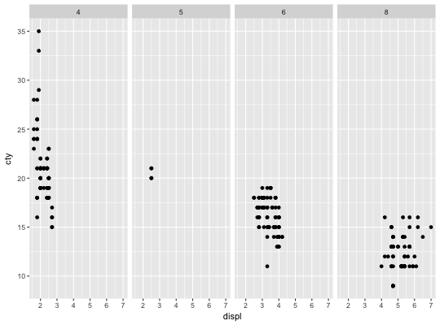p + facet_grid(drv ~ .)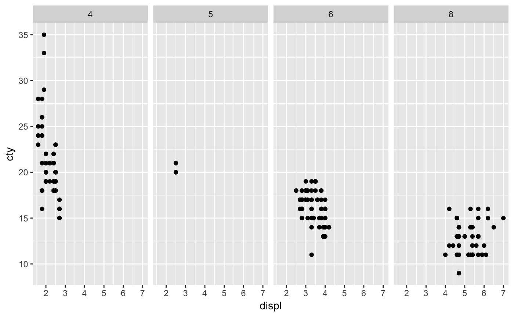p + facet_grid(drv ~ cyl)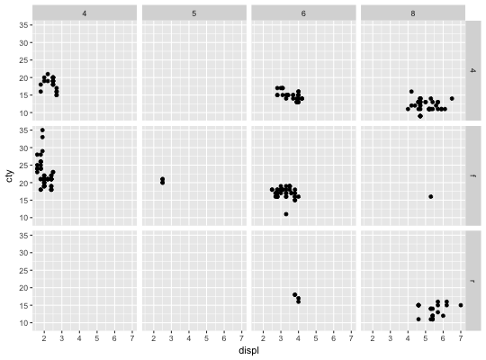# To change plot order of facet grid, # change the order of variable levels with factor() # If you combine a facetted dataset with a dataset that lacks those # facetting variables, the data will be repeated across the missing # combinations: df <- data.frame(displ = mean(mpg$displ), cty = mean(mpg$cty)) p + facet_grid(. ~ cyl) + geom_point(data = df, colour = "red", size = 2)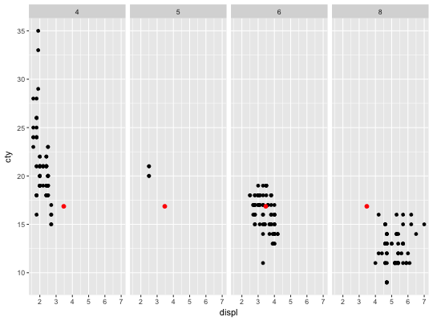# Free scales ------------------------------------------------------- # You can also choose whether the scales should be constant # across all panels (the default), or whether they should be allowed # to vary mt <- ggplot(mtcars, aes(mpg, wt, colour = factor(cyl))) + geom_point() mt + facet_grid(. ~ cyl, scales = "free")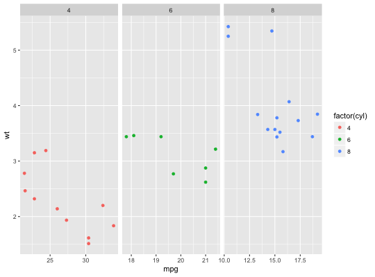# If scales and space are free, then the mapping between position # and values in the data will be the same across all panels. This # is particularly useful for categorical axes ggplot(mpg, aes(drv, model)) + geom_point() + facet_grid(manufacturer ~ ., scales = "free", space = "free") + theme(strip.text.y = element_text(angle = 0))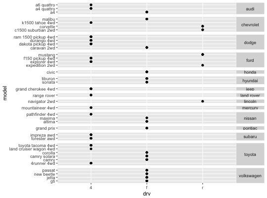# Facet labels ------------------------------------------------------ p <- ggplot(mtcars, aes(wt, mpg)) + geom_point() p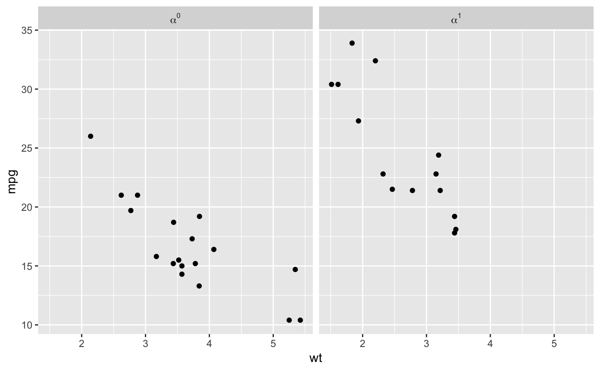# label_both() displays both variable name and value p + facet_grid(vs ~ cyl, labeller = label_both)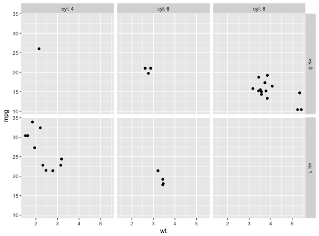# label_parsed() parses text into mathematical expressions, see ?plotmath mtcars$cyl2 <- factor(mtcars$cyl, labels = c("alpha", "beta", "sqrt(x, y)")) ggplot(mtcars, aes(wt, mpg)) + geom_point() + facet_grid(. ~ cyl2, labeller = label_parsed)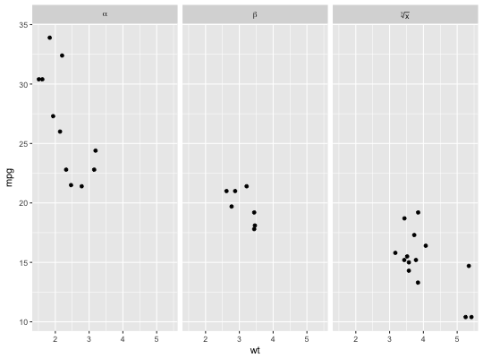# label_bquote() makes it easy to construct math expressions p + facet_grid(. ~ vs, labeller = label_bquote(cols = alpha ^ .(vs)))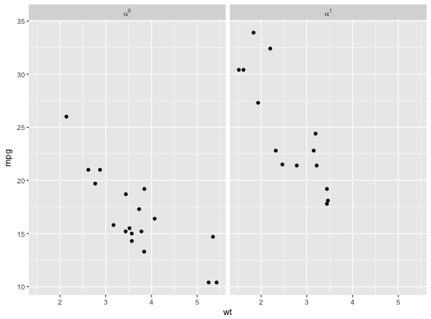# The facet strips can be displayed near the axes with switch data <- transform(mtcars, am = factor(am, levels = 0:1, c("Automatic", "Manual")), gear = factor(gear, levels = 3:5, labels = c("Three", "Four", "Five")) ) p <- ggplot(data, aes(mpg, disp)) + geom_point() p + facet_grid(am ~ gear, switch = "both")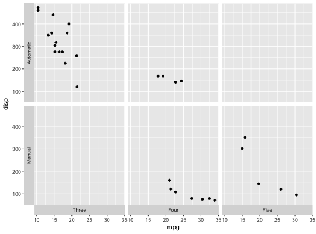# It looks better without boxes around the strips p + facet_grid(am ~ gear, switch = "both") + theme(strip.background = element_blank())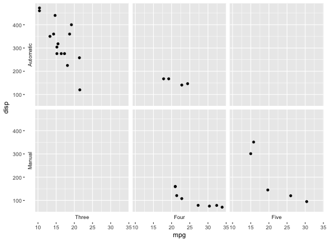# Margins ---------------------------------------------------------- # Margins can be specified by logically (all yes or all no) or by specific # variables as (character) variable names mg <- ggplot(mtcars, aes(x = mpg, y = wt)) + geom_point() mg + facet_grid(vs + am ~ gear)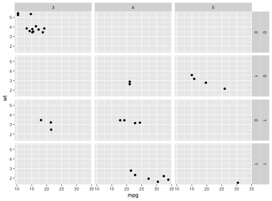mg + facet_grid(vs + am ~ gear, margins = TRUE)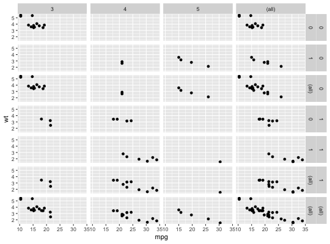mg + facet_grid(vs + am ~ gear, margins = "am")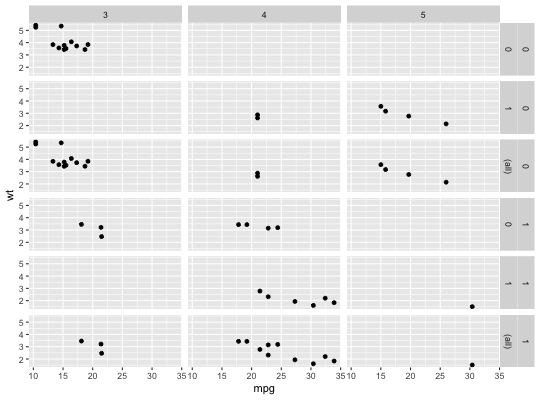# when margins are made over "vs", since the facets for "am" vary # within the values of "vs", the marginal facet for "vs" is also # a margin over "am". mg + facet_grid(vs + am ~ gear, margins = "vs")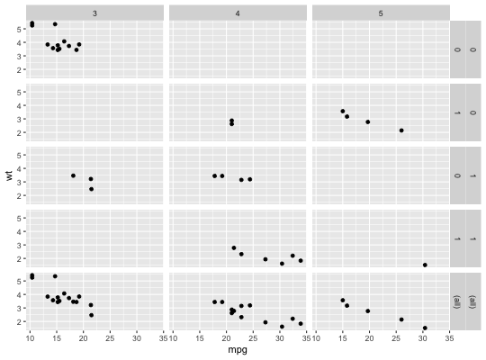mg + facet_grid(vs + am ~ gear, margins = "gear")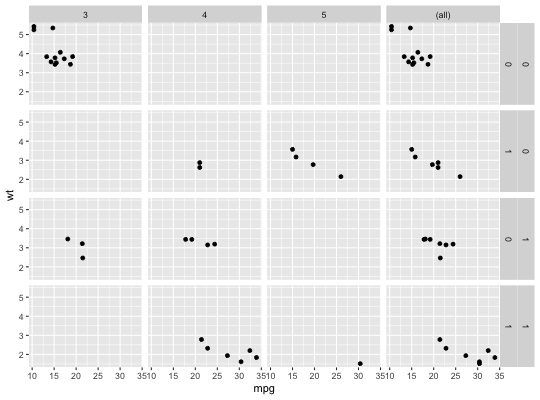mg + facet_grid(vs + am ~ gear, margins = c("gear", "am"))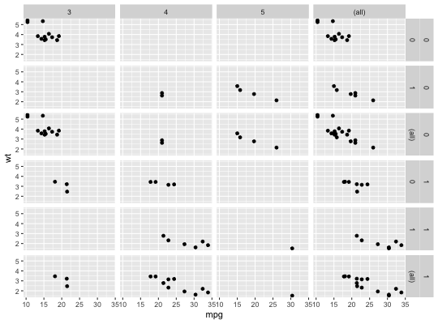